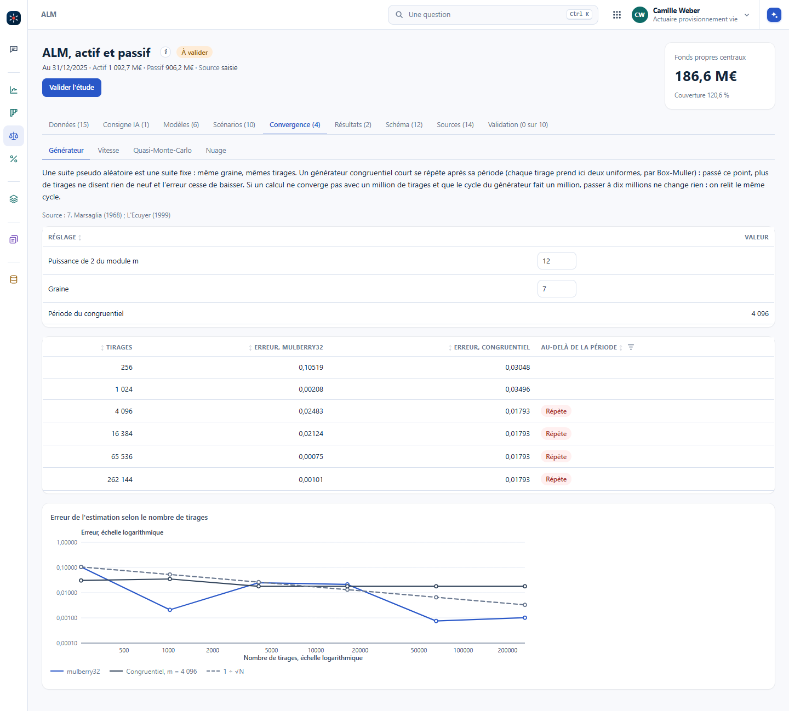
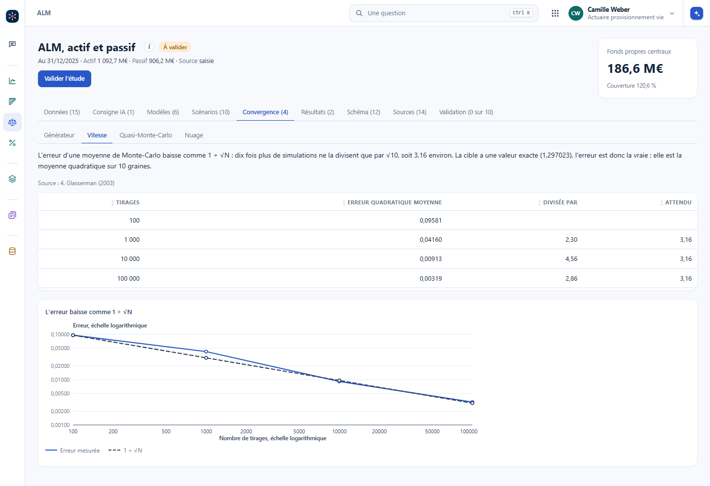
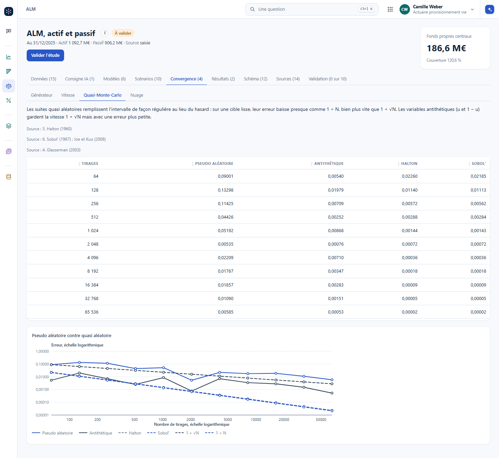
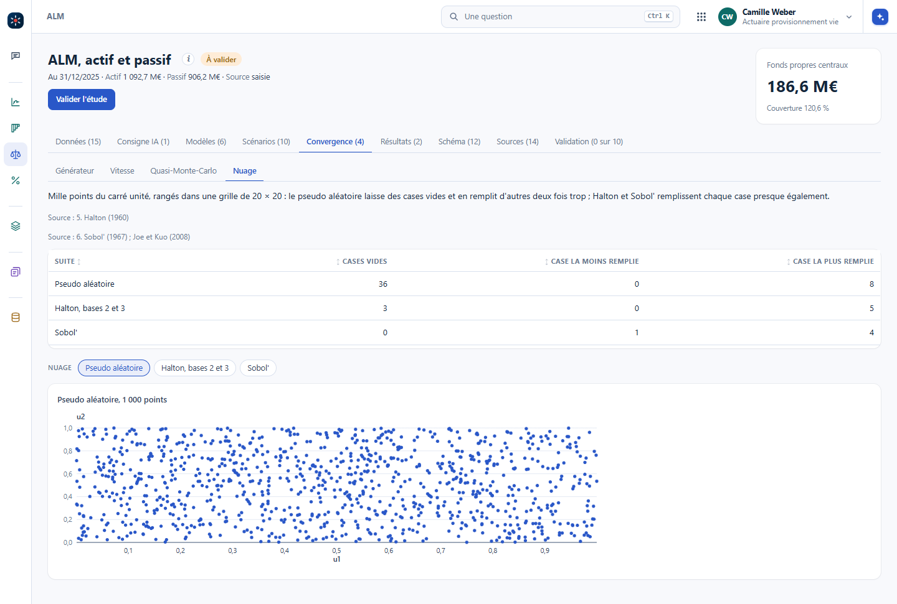

Une série pseudo aléatoire n'est jamais aléatoire : c'est une suite fixe, qui finit par se répéter. Un actuaire qui passe d'un million à dix millions de simulations parce que son calcul ne converge pas n'a rien gagné si le cycle du générateur fait un million : il relit dix fois le même cycle. On le rencontre dans des logiciels de simulation, et quelques tests suffisent pour s'en rendre compte.
Même graine, mêmes tirages : c'est ce qui rend un calcul reproductible, et le chapitre Versionner les résultats en fait une règle. Mais c'est aussi la preuve que rien n'y est aléatoire. Un générateur congruentiel calcule chaque tirage à partir du précédent, \(x_{n+1} = (a\,x_n + c) \bmod m\) : il ne peut prendre que \(m\) valeurs, donc il repart sur le même cycle au plus tard après \(m\) tirages. Passé ce point, des tirages de plus ne disent rien de neuf, et l'erreur cesse de baisser.
L'onglet Convergence de l'ALM le montre sur une cible dont on connaît la valeur exacte, donc l'erreur vraie. Un générateur court, de période 4 096, contre un générateur à longue période. Chaque tirage prend deux nombres uniformes : au-delà de 2 048 tirages, la suite courte se répète. Son erreur reste bloquée à 0,01793 de 4 096 à 262 144 tirages, alors que celle de l'autre générateur continue de baisser.
Même avec un bon générateur, l'erreur d'une moyenne de Monte-Carlo baisse comme \(1/\sqrt{N}\). Dix fois plus de simulations ne la divisent que par \(\sqrt{10}\), soit 3,16 environ ; la diviser par dix demande cent fois plus de simulations. Dans Vision, l'erreur quadratique moyenne sur dix graines passe de 0,0958 à 100 tirages à 0,0032 à 100 000 tirages, et la courbe suit la droite \(1/\sqrt{N}\).


Dans Vision : #/alm?ong=convergence, puis Générateur et Vitesse. La puissance de 2 du module et la graine se changent dans la case : un module plus petit raccourcit la période, et l'erreur se bloque plus tôt.
Les suites de Halton et de Sobol' remplacent le hasard par des points construits pour remplir l'intervalle de façon régulière. Sur une cible lisse, leur erreur baisse presque comme \(1/N\), bien plus vite que \(1/\sqrt{N}\). Dans Vision, à 65 536 tirages, l'erreur passe de 0,00585 en pseudo aléatoire à 0,00002 avec Sobol'. Sur mille points du carré, le pseudo aléatoire laisse 36 cases vides sur une grille de 20 × 20 ; Sobol' n'en laisse aucune. Les conditions de ce gain, la dimension, la régularité, l'intervalle de confiance, sont au chapitre Versionner les résultats.


Dans Vision : #/alm?ong=convergence, puis Quasi-Monte-Carlo et Nuage.
Ces propriétés ne se croient pas sur parole, elles se testent, et chaque test tient en quelques lignes que l'IA écrit très bien.
La documentation de l'outil la donne. On la compare au nombre de tirages du calcul : les simulations multipliées par les tirages de chaque simulation.
Faire tourner le même code sur un cas dont le résultat exact est connu, pour lire l'erreur vraie, et pas seulement l'écart entre deux lancements.
Mesurée sur plusieurs graines, si l'erreur ne baisse pas d'environ \(\sqrt{2}\), puis de \(\sqrt{10}\), quelque chose cloche : une période trop courte, un tirage réutilisé, un bug.
Si le résultat bouge plus que l'erreur annoncée, l'erreur est sous-estimée.
Votre outil a un générateur de période un million. Chaque simulation tire un nombre par année sur dix ans. Le calcul ne converge pas à 100 000 simulations, et un collègue propose de passer à 1 million. Qu'en pensez-vous ?
À 100 000 simulations de dix tirages, on consomme déjà le million de tirages du cycle. Au-delà, on relit le même cycle : 1 million de simulations, c'est dix fois les mêmes trajectoires, et l'erreur ne bouge plus. Il faut un générateur de bien plus longue période, puis, si la cible est lisse, une suite de Sobol' pour converger plus vite.
Avec un bon générateur, combien de simulations faut-il pour diviser l'erreur par dix ?
Cent fois plus, puisque l'erreur baisse comme \(1/\sqrt{N}\). Avec une suite de Sobol' sur une cible lisse, l'erreur baisse presque comme \(1/N\) : environ dix fois plus suffisent.
Le test de martingale d'un générateur de scénarios en est l'application directe : la fiche E4 de la bibliothèque le montre, intervalle à 95 % compris, avec l'erreur qu'il attrape.